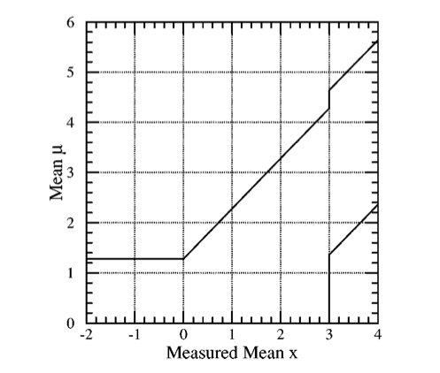

Confidence Intervals
Contents
Confidence Intervals#
Author: Jose A. Hernando, February 2020
Instituto Galego de Altas Enerxías. Universidade de Santiago de Compostela, Spain.
import time
print( ' Last Execution ', time.asctime())
Last Execution Mon Feb 19 18:08:13 2024
# general imports
%matplotlib inline
%reload_ext autoreload
%autoreload 2
# numpy and matplotlib
import numpy as np
import pandas as pd
import matplotlib
import matplotlib.pyplot as plt
import scipy.stats as stats
# possible styles: ggplot (simplicity), bmh (scientify data),
plt.style.context('seaborn-colorblind')
import htcore as htcore
import httoys as httoys
import htcint as htcint
import htcint_examples as htexam
# ploting images
from IPython.display import display, Image
Introduction#
Usually we indicate that a given parameters \(\mu\) (i.e lifetime) has an upper limit at 90 % CL (i.e. \(\tau(\beta\beta0\nu)\) > \(1.07 \times 10^{26}\) y at 90 %CL, of KamLAND-Zen).
Sometimes we quote an interval for the parameter \(\mu\) as a confidence interval (CI) with a confidence level (CL) range.
But what does it mean?
It means a very different thing for a frequentist and a bayesian!
And… how are they computed?
Frequestist vs Bayesians#
Frequentist talk about experiments in the same conditions. Bayesians talk about probabilities based on a prior knowledge or a ‘reasonable’ guess.
Frequentist say a CI covers the true value at a given \(\beta\) CL. That means that if you repeat a large number of times, \(m\), an experiment at for each one you set a CI \(\{\mathrm{CI}_i, \, i=1, \dots, m \}\), at least a fraction \(\beta\) of the CIs cover the true value.
A frequentist needs to provide a method to construct the CI. The method has to have the correct coverage.
Bayesians talk about credible intervals (CI), that is the probability that the true parameter is inside the CI is greather or equal to a \(\beta\) probability.
That sounds most like what you want, but unfortunately to get it, you need to do accept some assumptions or some ‘reasonable’ priors.
For a frequentist a CI indicates the limit in wich the data \(x\) is consider at extreme event respect the parameter \(\mu\) at a given \(\beta\) CL.
But to indicate is \(x\) is an extreme event, we need to order data as extreme with respect to a given \(\mu\) value.
We willl use the counting experiment as example.
In a counting experiment, you expect some known background \(b= 3\) events in a kinematical window (for example in a range or energy or a band in a invarnat mass), and an unknown signal with strength \(\mu >= 0\).
Classical frequentist CI#
Given \(x\) data that is related with a theoretical, unknown, parameter \(\mu\) via a pdf, \(g(x | \mu)\), (i.e x is poisson distributed with mean \(\mu\)) How we can provide a frequentist CI for \(\mu\) given \(x\)?
Classical CI are obtained using the Neyman construction.
Current or modern CI are obtained using Feldman-Cousins construction.
The Neyman construction defines a confidence belt in the plane \((x, \mu)\).
First, for a given \(\mu\) and the pdf, \(g(x | \mu)\), we define an interval \([x_l(\mu), x_u(\mu)]\) where inside there are contained at least \(\beta\) of the possible \(x\) values. We will describe later how this interval is constructed.
The union of the intervals \([x_l(\mu), x_u(\mu)]\) as a function of \(\mu\) define a confidence region, a belt; in the plane \((x, \mu)\).
There are three different ways to define the interval \([x_l(\mu), x_u(\mu)]\) for given \(\mu\).
Lower, central and upper limit intervals.
The lower interval:
For the upper:
And the central:
Notice that frequestist are conservative and \(\beta\) CL implies at least \(\beta\) CL.
In the next cells we compute the central, lower and upper interval for a give value of \(b = 3\) and \(\mu = 0.5\) of a poisson distribution.
b, mu = 3., 0.5
beta = 0.90
alpha = (1- beta)/2.
ns = np.arange(12)
ps = stats.poisson.pmf(ns, b + mu)
plt.bar(ns, ps, color = 'orange', hatch='\\', alpha = 0.5);
i0 = int(stats.poisson.ppf(alpha , b + mu))
i1 = int(stats.poisson.ppf(1-alpha, b + mu)) + 1
plt.bar(ns[i0:i1], ps[i0:i1], color = 'green', hatch='//', alpha = 0.5, label = 'central CL');
plt.xlabel('x'); plt.title('b + s = '+str(b)+' + '+str(mu)); plt.legend();
print('interval (', i0, ',', i1-1, ')')
print('coverage ', 100 * np.sum(ps[i0:i1]), '%')
interval ( 1 , 7 )
coverage 94.30636944863619 %
b, mu = 3., 0.5
beta = 0.90
ns = np.arange(12)
ps = stats.poisson.pmf(ns, b + mu)
i0 = int(stats.poisson.ppf(beta , b + mu)) + 1
plt.bar(ns , ps , color = 'orange', hatch='//', alpha = 0.5);
plt.bar(ns[:i0], ps[:i0], color = 'green' , hatch='\\', alpha = 0.5, label = 'upper');
plt.xlabel('x'); plt.title('b + s = '+str(b)+' + '+str(mu)); plt.legend();
print('interval ( - ,', i0 - 1, ')')
print('coverage ', 100 * np.sum(ps[:i0]), '%')
interval ( - , 6 )
coverage 93.47119029710466 %
b, mu = 3., 0.5
beta = 0.90
ns = np.arange(12)
ps = stats.poisson.pmf(ns, b + mu)
i0 = int(stats.poisson.ppf(1 - beta , b + mu))
plt.bar(ns , ps , color = 'orange', hatch='//', alpha = 0.5);
plt.bar(ns[i0:], ps[i0:], color = 'green' , hatch='\\', alpha = 0.5, label = 'lower');
plt.xlabel('x'); plt.title('b + s = '+str(b)+' + '+str(mu)); plt.legend();
print('interval (', i0 , ' , - )')
print('coverage ', 100 * np.sum(ps[i0:]), '%')
interval ( 1 , - )
coverage 96.95136243577515 %
Exercise: Consider a poisson distribution with \(b=3\) background events and a value of possible signal, \(\mu=0.5\). Give the 90% lower, upper and central interval.
def plt_rmu_classical(mu, b, beta = 0.90):
alpha = (1-beta)/2
rmu, xs = htcint.rmu(mu, b, beta, type = 'classical', full_output = True, )
print('Rmu segment for b ', b, 'and mu ', mu, ' = ', rmu);
cps, ps, ns = [xi[0] for xi in xs], [xi[1] for xi in xs], [xi[2] for xi in xs]
plt.bar (ns[:15], ps[:15], label = 'g(x| b + $\mu$)', alpha = 0.5);
plt.plot(ns[:15], cps[:15], marker = 'o', color = 'green',
label = 'cdf(x| b + $\mu$)', alpha = 0.5);
plt.plot((0, 15), ( alpha, alpha), color = 'black', ls = '--');
plt.plot((0, 15), (1-alpha, 1-alpha), color = 'black', ls = '--');
plt.xlabel('$x$');
plt.title('b = '+str(b)+', $\mu$ = '+str(mu)); plt.grid()
plt.legend();
return
mu, b, beta = 4, 3., 0.90
plt_rmu_classical(mu, b, beta)
Rmu segment for b 3.0 and mu 4 = (3, 12)
We define the confidence belt scaning along the \(\mu\) values and for each one, konwing the pdf \(g(x \ \mu)\), computing the interval \([x_l(\mu), x_u(\mu)]\) that provides a \(\beta\) % contaiment.

In the case we measure \(x_0 = 3.2\), the CI is given by the values of \(\mu\) where the vertical line \(x_0 = 3.2\) meets the boundaries of the confidence belt.
Example: Construct the confident belt CI at 90% and 68% CL considering a counting experiment with background \(b\) and unknown signal \(\mu\).
In the case the pdf is a poisson with mean \(b + \mu\). We scan along \(\mu\) and for each \(\mu\) we obtain the interval \([x_l(\mu), x_u(\mu)]\) using the central interval at 90% contaiment.
The we unify the border of the segments and we define the confident belt.
Inspect the code in the following cells
Exercise: What is the CI at 90% CL? And for \(b=3\) and \(x_0 = 1\)?
def plt_confbelt(x0, b, beta1 = 0.90, beta2 = 0.68, type = 'classical',
mumax = 12, musize=200):
""" draws the CI confident belt for beta1 and beta2 CL of type = ('classical', 'fc')
draws a line in the confident belt plane for x0 and print the ci for beta1 and beta2
beta1 = 90 %CL and beta2 = 68% CL
"""
mus = np.linspace(0., mumax, musize)
xls, xus, ci1 = htcint.ci_belt(mus, b, beta1, type = type)
plt.fill_betweenx(mus, xls, xus, color = 'cyan', alpha = 0.5,
label = str(int(100*beta1))+'% CL');
xls, xus, ci2 = htcint.ci_belt(mus, b, beta2, type = type)
plt.fill_betweenx(mus, xls, xus, color = 'blue', alpha = 0.5,
label = str(int(100*beta2))+'% CL' );
plt.plot((x0 + 0.1 , x0 + 0.1), (0, mumax), color = 'black', ls = '--')
plt.xlabel('$x$'); plt.ylabel('$\mu$'); plt.title(type); plt.grid(); plt.legend()
print('CI ', ci1(x0), ' at ', beta1, 'CL for b = ', b, ' and x0 = ', x0)
print('CI ', ci2(x0), ' at ', beta2, 'CL for b = ', b, ' and x0 = ', x0)
return ci1, ci2
x0, b = 0, 3
plt_confbelt(x0, b, type = 'classical', mumax = 12, musize = 200);
CI None at 0.9 CL for b = 3 and x0 = 0
CI None at 0.68 CL for b = 3 and x0 = 0
Exercise: Test the coverange of the CI at 90 % CL in the previous example. Consider \(b=2\) and \(\mu_{true} = 2\).
Exercise: Use the classical construction of CI for the case of a gaussian with sigma 1 and \(\beta = 68\) % CL. Test the coverage is corrent with the case of \(\mu_{\mathrm{true}}\) = 0.
Feldman-Cousins (FC) CI#
Feldman and Cousins, when working on 90’s on the NOMAD experiment, found several worrisome issues with classical CIs.
And they proposed an ordering principle to compute the extreme data, \(x\), with respect \(\mu\) based on the likelihood ratio.
This ordering principle avoid the decision of lower, central and upper intervals. It passes smoothly from one to another.
Now is the new classical.
Historically, Feldman and Cousins encountered:
First, one have the temptation of quoting a flip-flop result: if we do not observe a signal, we quote a 90% CL lower interval, if we get an observation, we quote a 90% central CI. That is… your present your result depending on your data. Sounds bad!
In this example, data, \(x\), follows a normal gaussian. At 3 Z, the confidence belt pass from 90 % CL lower limit to 90% CL central limit. The belt has not the proper frequentist coverage.
{kind=link}
We should decide what type of intervatl to quote before doing the measurement!
Second, there is no CI at 90% CL for the case \(b=3\) and \(x_0= 0\). (See the previos example) Imagine that NOMAD expecting 3 background events, see no signal, and have no result to quote!
This was unacceptable! It was a pousible result of the NOMAD experiment! No quoting a result!
FC proposed a construction interval method (Feldman-Cousins method) that smoothly passes from lower to central intervals and avoid the problem of the no CI observed at \(b=3, x_0 = 0\).
Exercise: Verify that the flip-flop problem has not the proper coverage. Set the flip-flop construction and test the coverture for \(\mu_{true} = 3\).
Question: Why the case \(b=3\) and \(x_0 = 0\) has no classical CI at 90% CL?
FC proposed an ordering rule, a variable that quantifies how extreme data \(x\) is respect \(\mu\).
The variable is the likelihood ratio with respect the best-estimate \(\hat{\mu}(x)\).
The best-estimate \(\hat{\mu}(x)\) is the value of \(\mu\) that maximizes the likelihood \(\mathcal{L}(x| \hat{\mu}(x))\) for a given measurement \(x\).
The values of \(t_\mu\)(x) vary between \([0, 1]\).
The \(x\) measurements with \(t_\mu(x)\) values approaching 1 are “likely” measurements respect \(\mu\) and those wich values close to 0 are “unlikely”.
The lower \(t_\mu(x)\) value the most extreme a \(x\) measurement is.
For example for a given \(\mu\) and \(x\), if the best estimate \(\hat{\mu}(x)\) is close to \(\mu\), both likelihoods are similar and the ratio, \(t_\mu(x)\), is close to 1.
Nevertheless a given \(x\) may have a small likelihood, \(\mathcal{L}(x | \mu)\), but the maximum likelihood for that \(x\), \(\mathcal{L}(x | \hat{\mu}(x))\) may also be small, then \(t_\mu(x)\) is close to 1, and \(x\) can gain priority respect other \(x\)’s values for the same \(\mu\).
That is the case \(x = 0\) for \(b = 3\). The problematic case discussed above which could let to not quote in the classical construction.
Example: Consider the case of \(b=3\) and \(\mu = 0.5\) and constract the FC segment, \([x_l(\mu), x_u(\mu)]\) along \(x\) at 90% CL.
For each \(n\), that has probability \(g(n | b + \mu)\), with \(b=3, \, \mu = 0.5\), we estimate \(\hat{\mu}(n)\).
The best estimate \(\hat{\mu}(n)\) is \(n-b\), that is, the value the maximices \(g(n | b+ \hat{\mu} = n)\).
Except for \(n\le 3\), that it is \(0\), as there is no physical meaning of a negative signal.
For each \(n\) we compute the likelihood ratio \(t_\mu(n)\).
In this case:
Then we order the \(n\) accordingly with \(t_\mu(n)\) from highest to lowest (in this case).
Each value \(n\), has a probability \(g(n | b + \mu)\).
We accept \(n\) values in the CI in \(t_\mu\) order and considering its probability \(g(n | b + \mu)\) till we reach or surpass 90% probability.
Inspect the code in the next cells
The next table shows the values of \(g(n | b+ \mu), \, \hat{\mu}(x), \, g(n | b + \hat{\mu}(n)), \, t_\mu(x), q_\mu (x) = -2 \mathrm{ln}(t_\mu(x))\) for the possible measurements \(n\) in a single counting experiment with \(b = 3\) and \(\mu = 0.5\).
b, mu = 3, 1
ns = np.arange(12)
muhats = np.asarray([max(0, ni - b) for ni in ns])
def tmu(ni, muhat, b = b, mu = mu):
return stats.poisson.pmf(ni, b + mu) / stats.poisson.pmf(ni, b + muhat)
gmus = np.asarray([stats.poisson.pmf( ni, b + mu) for ni in ns])
gmuhats = np.asarray([stats.poisson.pmf( ni, b + muh) for ni, muh in zip(ns, muhats)])
tmus = np.asarray([tmu(ni, muhati) for ni, muhati in zip(ns, muhats)])
dic = {'n (x)' : ns, 'muhat(x)' : muhats,
'g(n | b + muhat)' : gmuhats, 'g(n| b+ mu)': gmus, 'tmu(n)': tmus, 'qmu ': -2 * np.log(tmus) }
df = pd.DataFrame(dic)
df
| n (x) | muhat(x) | g(n | b + muhat) | g(n| b+ mu) | tmu(n) | qmu | |
|---|---|---|---|---|---|---|
| 0 | 0 | 0 | 0.049787 | 0.018316 | 0.367879 | 2.000000 |
| 1 | 1 | 0 | 0.149361 | 0.073263 | 0.490506 | 1.424636 |
| 2 | 2 | 0 | 0.224042 | 0.146525 | 0.654008 | 0.849272 |
| 3 | 3 | 0 | 0.224042 | 0.195367 | 0.872011 | 0.273908 |
| 4 | 4 | 1 | 0.195367 | 0.195367 | 1.000000 | -0.000000 |
| 5 | 5 | 2 | 0.175467 | 0.156293 | 0.890727 | 0.231436 |
| 6 | 6 | 3 | 0.160623 | 0.104196 | 0.648696 | 0.865581 |
| 7 | 7 | 4 | 0.149003 | 0.059540 | 0.399592 | 1.834621 |
| 8 | 8 | 5 | 0.139587 | 0.029770 | 0.213274 | 3.090355 |
| 9 | 9 | 6 | 0.131756 | 0.013231 | 0.100422 | 4.596744 |
| 10 | 10 | 7 | 0.125110 | 0.005292 | 0.042303 | 6.325815 |
| 11 | 11 | 8 | 0.119378 | 0.001925 | 0.016121 | 8.255220 |
In the next cell we plot \(g(n | b + s)\) and \(t_\mu(x)\) for n-values given \(b = 3\) and \(\mu = 0.5\)
plt.bar(ns, gmus, alpha = 0.5, label = '$g(x | b + \mu)$');
plt.bar(ns, tmus, alpha = 0.5, label = '$t_\mu(x)$');
plt.xlabel('$x$'); plt.legend();
def plt_rmu_fc(mu, b, beta = 0.9):
rmu, xs = htcint.rmu(mu, b, beta, type = 'fc', full_output = True)
print('Rmu segment for b ', b, 'and mu ', mu, ' = ', rmu);
tms, cps, ns = [xi[0] for xi in xs], [xi[1] for xi in xs], [xi[2] for xi in xs]
#tms = [-2*np.log(tmi) for tmi in tms]
ps = [cps[0]]; ps = ps + [cps[i]-cps[i-1] for i in range(1, len(ns))]
ks = range(len(ns))
ax = plt.gca()
axb = ax.twinx()
ax.bar (ks[:15], ps[:15], label = '$g(x | b + \mu)$', alpha = 0.5, color = 'green');
ax.plot(ks[:15], cps[:15], marker = 'o', color = 'green',
label = 'cdf(x| b + $\mu$)', alpha = 0.5);
axb.bar(ks[:15], tms[:15], label = '$t_{\mu}(x)$', alpha = 0.5, color = 'orange');
ax.plot((0, 15), (beta, beta), color = 'black', ls = '--');
ax.set_xlabel(r'$x$'); ax.set_ylabel('probabilty'); axb.set_ylabel(r'$t_\mu$')
plt.xticks(ks[:15], labels = ns[:15])
plt.title('b = '+str(b)+', $\mu$ = '+str(mu)); plt.grid()
ax.legend(loc = 1); axb.legend(loc = 4)
return
In the next cell we plot in order of better \(t_\mu(n)\), with its correspondent \(g(n | b+\mu), \; t_\mu(n)\) and the cumulative function, \(\mathrm{cdf}(n | b+\mu)\).
The interval \([n_l(\mu), n_u(\mu)]\) is defined by the range of \(n\) values till cumulative function surpassses a given \(\beta\) contaiment (the dashed line in the plot).
For this case \(b = 3, \, \mu = 0.5, \; \beta = 90\) %.
mu, b, beta = 1., 3., 0.90
plt_rmu_fc(mu, b, beta);
Rmu segment for b 3.0 and mu 1.0 = (1, 7)
The next cell show the confidence belt using the FC ordering for the case of a single counting experiment with \(b = 3\) at 68% and 98% contaiment.
Explore and obtain the confidence interval for different measurements, for example the problematic one \(x = 0\) that we studied with the classical construction.
x0, b = 0, 3
plt_confbelt(x0, b, type = 'fc');
CI (0.0, 0.9045226130653266) at 0.9 CL for b = 3 and x0 = 0
CI (0.0, 0.06030150753768844) at 0.68 CL for b = 3 and x0 = 0
Exercise: FC is a frequentist method. Verify now that the FC contruction garantees coverage for some examples \(b = 3, \mu_{true} = 0.5\).
Exercise: Compare the classical and frequentist interval, where they differ? where they are equal? Use the case for example \(b=3\).
FC confidence intervals in n-dimensions#
The classical ordering is hard to extend to n-dimensions. But FC is not.
We redefine the variable:
In this case, if \(x\) gives \(\hat{\mu}(x) \simeq \mu\), \(t_\mu \sim 0\), while if \(\hat{\mu}(x)\) is different from \(\mu\), \(t_\mu\) is large.
The larger \(t_\mu(x)\) the most extreme is \(x\) with respect \(\mu\).
The pdf, \(g(t_\mu | \mu)\), allow us to set the most \(1-\beta\) extreme \(x\) data for a given \(\mu\).
There is no lower, central or upper integral. The ordering set a unique interval
In this case \(\mu\) is a vector. We scan a region of the vector space. For each point in that space we will compute the \(t_\mu(x)\) pdf, \(g(t_\mu | \mu)\), and the p-value of the observed data \(x_0\). We will select the region of \(\mu\), as the confidence region, which p-values are inside the \(\beta\) CL.
Example: Compute the distribution of \(t_\mu(x)\) for the case of \(b=3\) and \(s=0.5\) and \(t_\mu\) value for the observed data \(x_0 = 1\)
b, mu, x0, size = 3, 0.5, 0, 1000
htexam.plt_tmus(x0, stats.poisson, b + mu, b, size);
p-value t0 : 0.172
(xl, xu) with tmu <= tmu0 : ( 0 , 5 )
Bayesian Credible Intervals#
Bayesians provide a credible integral at a \(\beta\) CL. The probability to find the true value inside the CI is \(\beta\).
To obtain the CI, bayesians need the pdf \(g(x | \mu)\), and the prior probability of the relevant parameter, \(\pi(\mu)\).
In most cases, this prior is unknown, and we are forced to take a ‘reasonable’ prior. Using the Bayes’ theorem we can compute the posterior probability:
The denominator is the probiblitity to get \(x\) for all posible hypotheses, \(\mu\), that is:
Example: low stats poisson#
Consider the case of a counting experiment with \(b\) background events (\(b\) is known) and expect a signal \(s\) on top. If one measures \(n\), the posterior probability for \(s\) is:
To get the upper limit CI at \(\beta\) CL, we integrate the posterior till the upper value, \(s_u\), to get a total probability \(\beta\).
We can take a ‘reasonable’ prior on \(s\) (as a constant if \(s>0\))
The posterior of data \(n\) is proportional to:
where, \(\Gamma(x, \alpha, \beta)\) is the gamma distribution.
The case \(b=0\), the denominator (see above) \(\int_s p(n |s) \, \pi(s) \, \mathrm{d}s = 1\), and the numerator, reduces to:
For a value of \(b\), we need to solve:
That can be computed with the change \(u=s+b\).
Example: Compute the posterior probability of the signal \(s\) for an experiment that expect \(b = 3\) background events and measures \(n_0 = 0\) or \(n_0 = 6\).
b, n0 = 4., 1.
nmax = 2.*(n0 + b)
htexam.bayes_poisson_upper(b, n0, 10, 500);
integral : 0.9999999999999998
Upper limit 68 % CL : 1.4028056112224447
Upper limit 90 % CL : 2.7454909819639277
Upper limit 95 % CL : 3.5470941883767533
b, n0 = 3., 10
nmax = 2.*(n0 + b)
htexam.bayes_poisson_ci(b, n0, nmax, 500);
integral : 1.0000000000000002
CI 68 % CL : ( 4.68937875751503 , 11.306613226452905 )
CI 90 % CL : ( 3.1262525050100196 , 14.016032064128256 )
CI 95 % CL : ( 2.4488977955911824 , 15.422845691382765 )
Example: Compute the upper limit, \(s_u\), using Bayes’ CI at 90% CL for different values of \(b\) and \(n\) observations.
beta, ndim, nobs = 0.90, 13, 5
bs = np.arange(ndim)
ns = np.arange(nobs)
colors = 4*['black', 'blue', 'green', 'red', 'cyan']
for ni in ns:
color = colors[ni]
cbs = np.array([stats.gamma.cdf(bi, ni+1) for bi in bs])
betaps = beta*(1-cbs)+cbs
ss = np.array([stats.gamma.ppf(betapi, ni+1)-bi for bi, betapi in zip(bs, betaps)])
plt.plot(bs, ss, color=color, lw=2, alpha=0.5, label=r'n = {:d}'.format(ni))
plt.xlabel(r'$b$'); plt.grid();
plt.ylabel(r'$s_u$ bayes {:d} %CL'.format(int(100*beta)));
plt.legend();